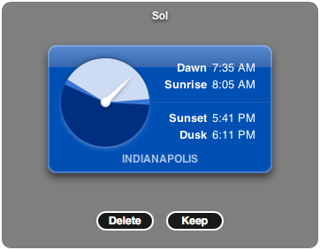

Sol 1.2.3
Sunrise and sunset Dashboard widgetSol is a Dashboard widget that tells you what time sunrise and sunset are, as well as dawn and dusk.

The analog display is a 24-hour clock, with noon at the top and midnight at the bottom. The dark region is nighttime, the light part is daytime, and the slivers in between are dawn and dusk. (Or, for the technically inclined, they are civil twilight.)
Download
Source Code
The source code for Sol 1.2.3 is available under the terms of the MIT license. This includes the Objective-C source for the native Cocoa portion, Photoshop files for the images, the PHP script for the place names web service, and the entire place names database (as well as the HTML, JavaScript, and CSS, of course).

Where are people using Sol?
Top Ten
- London, United Kingdom
- New York, New York, USA
- Paris, France
- Los Angeles, California, USA
- Berlin, Germany
- Seattle, Washington, USA
- San Francisco, California, USA
- Toronto, Canada
- Chicago, Illinois, USA
- Sydney, Australia
Ten Most Recent
- Philadelphia, Pennsylvania, USA
- Melzo, Italy
- Oulu, Finland
- London, United Kingdom
- Oslo, Norway
- Dublin, Ireland
- Santiago, Spain
- Torphins, United Kingdom
- Streamwood, Illinois, USA
- Bielefeld, Germany
Revision History
Changes since 1.2.2
- Works on Leopard
- Fixed layout problems when short time format includes "Uhr"
- Slightly increased contrast between clock hand and daytime portion of clock face
Changes since 1.2.1
- Translated into Polish
- Fixed behavior at latitudes where sunrise and sunset don't always happen
Changes since 1.2
- Translated into Swedish
- Fixed a really embarrassing typo
Changes since 1.0.1
- Choose from over two million cities and towns worldwide
- Translated into Danish, Dutch, French, German, Italian, and Norwegian
- Clicking on the clock hides the digital times
- Choose from civil, nautical, and astronomical twilight
- Uses the city from your Address Book card by default
Changes since 1.0
- Times are displayed in the user's preferred format (AM/PM or 24-hour), set in System Preferences → International → Format (thanks to Bram ten Haaf and Paul Janssen)
- Fixed weird times in Australia and possibly other places (thanks to Matt Hiser)
- Fixed negative times in the Pacific time zone and possibly other time zones (thanks to Buff Allen)
- Times with two-digit hours are formatted properly when using AM/PM-style times
Mac OS X 10.4.3 is required. If you're using Safari, click the download link. When the widget download is complete, show Dashboard, click the Plus sign to display the Widget Bar and click the widget's icon in the Widget Bar to open it. If you're using a browser other than Safari, click the download link. When the widget download is complete, unarchive it and place it in /Library/Widgets/ in your home folder, show Dashboard, click the Plus sign to display the Widget Bar and click the widget's icon in the Widget Bar to open it.